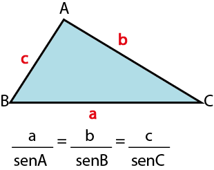
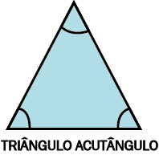
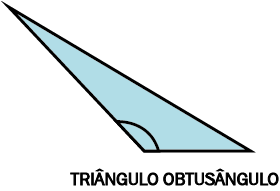
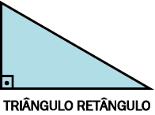
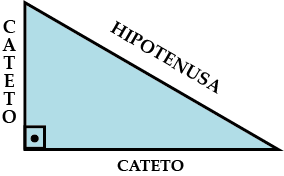
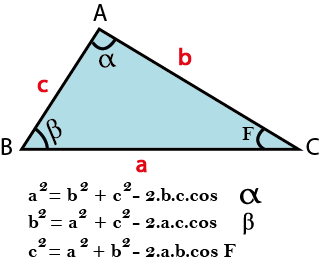

As relações trigonométricas só podem ser utilizadas quando se fala em triângulo retângulo, caso o triângulo seja de outro tipo, como o obtusângulo por exemplo, é correto realizar o uso da lei dos senos ou cossenos, dependendo da sua necessidade.
Determina que num triângulo qualquer, a relação do seno de um ângulo é sempre proporcional à medida do lado oposto a esse ângulo.. Logo a razão entre o valor de um lado e o seno de seu ângulo oposto será constante. Sendo assim para um triângulo ABC de lados a,b,c essa lei admite as seguintes relações:
OBS: Os valores dos senos devem ser consultados na tabela das razões trigonométricas. Nela, podemos encontrar os valores dos ângulos de 1º a 90º de cada função trigonométrica (seno, cosseno e tangente).
Utilizamos essa lei nos triângulos acutângulos (aqueles que possuem ângulos internos menores que 90 graus ou seja agudos) e obtusângulos (aqueles que possuem ângulos internos maiores que 90 graus ou seja obtusos).
  Nesse caso sabemos que o triângulo é formado por um ângulo reto de 90 graus, então nele será utilizado o Teorema de Pitágoras e a relação entre seus lados:
Esse teorema possui o seguinte enunciado: "a soma dos quadrados de seus catetos corresponde ao quadrado de sua hipotenusa". Sua fórmula é expressa por h2=ca2 + co2. Assim, quando temos um triângulo retângulo, o seno será à razão entre o comprimento do cateto oposto e o comprimento da hipotenusa, ou seja, seno=cateto oposto/hipotenusa.
É utilizado para encontrar o valor de um lado ou de um ângulo desconhecido em um triângulo qualquer conhecendo suas outras medidas. O seu teorema estabelece que: “Em qualquer triângulo, o quadrado de um dos lados corresponde à soma dos quadrados dos outros dois lados, menos o dobro do produto desses dois lados pelo cosseno do ângulo entre eles.’’Sendo assim temos as seguintes relações entre seus lados e seus ângulos:
Pode ser aplicada em qualquer triângulo. Seja ele acutângulo (ângulos internos menores que 90º), obtusângulo (com um ângulo interno maior que 90º), ou retângulo (com um ângulo interno igual a 90º).
Vamos aplicar a lei dos cossenos para o lado oposto ao ângulo de 90º, conforme indicado abaixo: a2 = b2 + c2 - 2 . b . c . cos 90º Como cos 90º = 0, a expressão acima fica: a2 = b2 + c2 Que é igual a expressão do Teorema de Pitágoras. Assim, podemos dizer que este teorema é um caso particular da lei dos cossenos. A lei dos cossenos é adequada para problemas em que conhecemos dois lados e o ângulo entre eles e queremos descobrir o terceiro lado.Enquanto na lei dos senos é mais adequado para saber o valor de um ângulo.
OBS: lembre-se que a medida interna de um triângulo pode chegar até 180 graus no máximo, isso pode te ajudar a descobrir o valor do ângulo que falta quando existirem 2 valores dados.